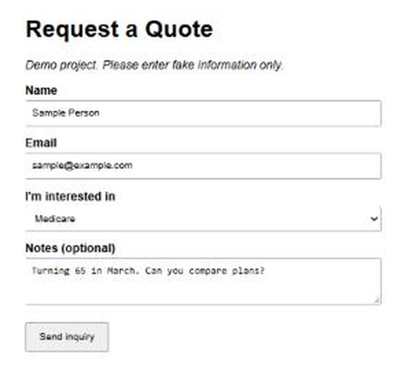
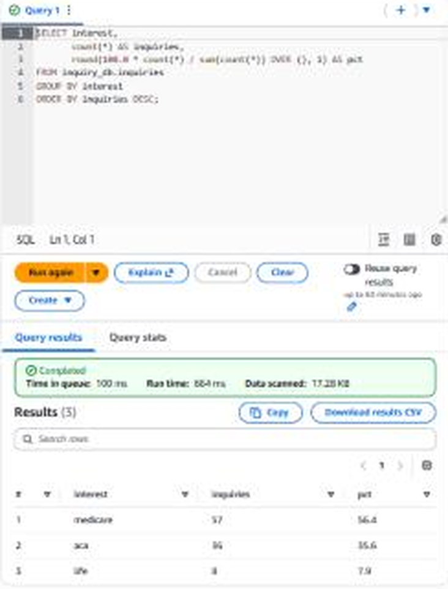

Business problems, built into working software.
I’m Jordan Jenkins, an Information Systems student exploring where AI, business, and software meet. Here are seven projects, from a data pipeline on AWS to a texting tool built for a family member.
The work
Choose a project to see what it looks like, the problem it solves, and where it falls short.
-
Illustration An illustration of the layout. A screenshot is coming. AI For Life
Making practical AI easier to learn, one walkthrough at a time.
Problem
New AI users need a clear starting point, understandable terminology, and examples that connect tools to real work.
Approach
A student club resource hub brings together tool walkthroughs, business use cases, a searchable glossary, prompts, and a beginner learning roadmap.
What it shows
Organizing technical information into an approachable learning experience.
Limits
An educational resource; tool details need ongoing review as products change.
-
Illustration An illustration of the layout. A screenshot is coming. Text From Sheet
Texts a spreadsheet of contacts from a person's own phone number: personalized, paced, and built with guardrails.
Problem
A non-technical family member needed to text a few hundred people who know him from his own number. Bulk-texting services start around $25 a month and require carrier registration; sending by hand is slow and error-prone.
Approach
A Python rules engine normalizes phone numbers and enforces consent, opt-out and do-not-text lists, duplicate removal, and sensitive-data blocking. An Android (Termux) sender paces texts about one a minute between 8am and 6pm after one typed approval, logs every send so it can resume, and runs from one-tap home-screen buttons, including a file picker for Excel lists. A no-install web app offers a review-each-text version. Extras: STOP-reply scanning, birthday automation with a one-time approval, and picture mode.
What it shows
Turning a real user's request into requirements, building controls against misuse and compliance mistakes, and verifying the result with 150+ automated tests and a build-versus-buy comparison.
Limits
Tests use simulated senders; not yet field-tested on a phone. Delivery is not confirmed, picture texts need one tap per person (an Android limit), and all sample data is fictional.
-

Screenshot The request-a-quote form, served over HTTPS (fake sample data). 
Screenshot Athena counting inquiries by product, on 101 synthetic records. Client Inquiry Pipeline
A serverless AWS pipeline that saves quote-request inquiries as structured records, so questions like "which products do people ask about most?" are answered with SQL instead of by digging through an inbox.
Problem
A website form that only sends an email makes basic questions hard to answer: which products draw the most interest, and how many inquiries came in this week.
Approach
A static form on S3 and CloudFront posts to an API Gateway endpoint. A Python Lambda function validates each inquiry and saves it as a JSON file in a private S3 bucket, and Athena runs SQL over those files. The backend is also defined as code with AWS SAM, and 12 unit tests plus a template check run on every push through GitHub Actions.
What it shows
Designing a small data pipeline around a business question, applying least-privilege access and server-side validation, and finding and fixing a bug by building the backend twice (hand-built versus as code).
Limits
A learning project built on fake data only; the analytics numbers come from 101 generated inquiries and are not market findings. The API has no authentication, and it is throttled.
-
Illustration This project isn’t public, so this is an illustration of its layout, not a screenshot. Insurance website
A web application for an insurance advisory business.
Problem
An advisory business needs an organized digital presence that visitors can navigate and understand.
Approach
A React and TypeScript website uses reusable interface components and structured routing.
What it shows
Building a business-facing web interface with reusable components.
Limits
Source is private. A public website address has not been added to this portfolio.
-
Illustration This project isn’t public, so this is an illustration of its layout, not a screenshot. Options research lab
A reproducible foundation for studying simulated options execution.
Problem
Research results are hard to trust without explicit costs, valid data, and reproducible experiment records.
Approach
A Python toolkit validates input data, replays simulated execution, records experiment metadata, and tests accounting and data integrity using synthetic fixtures.
What it shows
Building auditable research infrastructure and documenting the limits of evidence.
Limits
No trading edge has been established. This is offline research, with no live-order code.
-
Illustration This project isn’t public, so this is an illustration of its layout, not a screenshot. Mass Email Sender
A desktop workflow for personalized spreadsheet-based email campaigns.
Problem
Repeated communication needs personalization, campaign tracking, and a clear review step before sending.
Approach
A desktop application organizes templates, spreadsheet imports, business-specific campaigns, previews, and scheduled sends.
What it shows
Turning a repetitive business process into a guided, reviewable workflow.
Limits
A local application; client lists, messages, and account data are not part of this portfolio.
-
Illustration This project isn’t public, so this is an illustration of its layout, not a screenshot. Woodworking showcase
A product and storytelling website for handcrafted bookshelves.
Problem
A craft business needs a way to explain its story and present its products clearly.
Approach
A React website separates editable content from layout, with product, gallery, and story sections.
What it shows
Structuring a marketing website so content can be maintained in one place.
Limits
Business details and photography remain to be completed before launch.
No projects match that search. Clear it or choose All.
About
I’m an Information Systems student interested in AI, startups, and business analytics. I like turning new technology into something people can actually use.
These projects span learning resources, business workflows, desktop tools, and experiments. I’m continuing to learn SQL, GitHub, Claude Code, and AI workflows along the way.